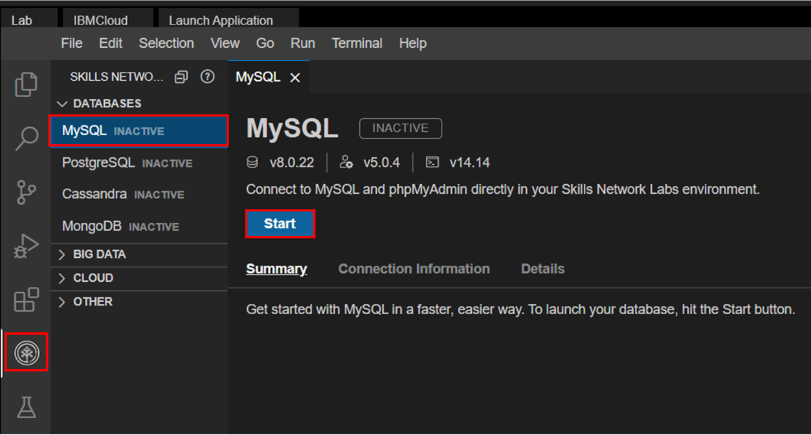
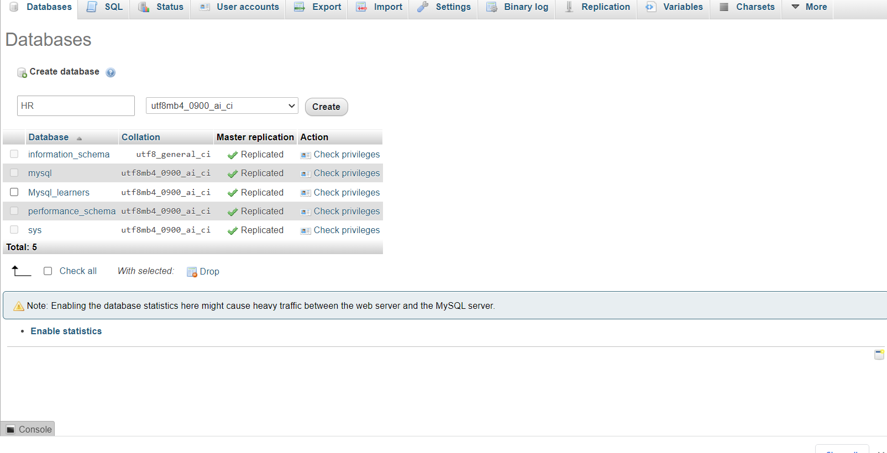
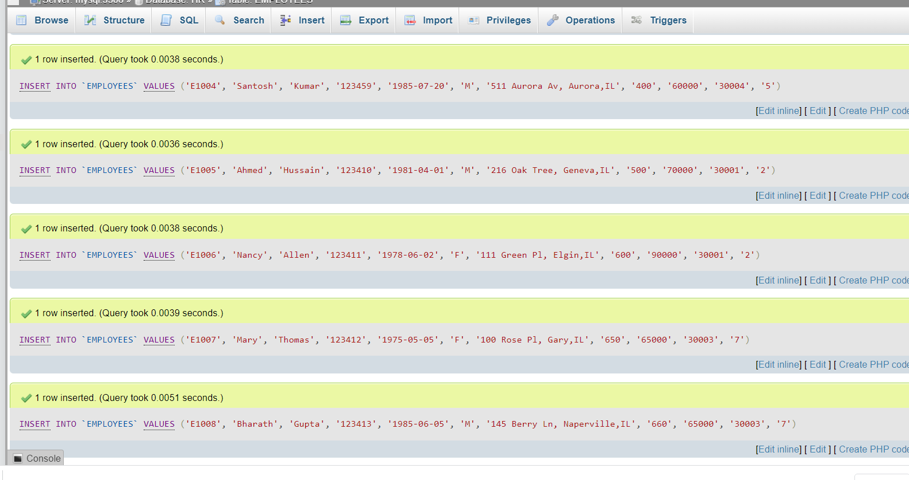
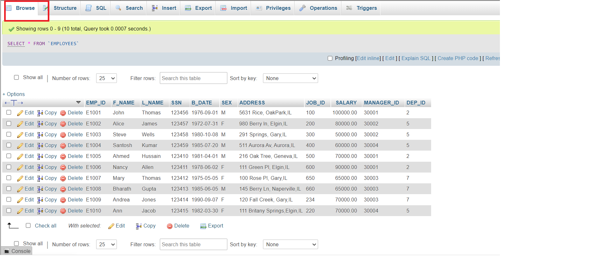

Estimated time needed: 20 minutes
In this lab, you will learn how to create tables and load data in the MySQL database service using the phpMyAdmin graphical user interface (GUI) tool.
In this lab, you will use MySQL. MySQL is a Relational Database Management System (RDBMS) designed to efficiently store, manipulate, and retrieve data.

To complete this lab you will utilize MySQL relational database service available as part of IBM Skills Network Labs (SN Labs) Cloud IDE. SN Labs is a virtual lab environment used in this course.
The database used in this lab is an internal database. You will be working on a sample HR database. This HR database schema consists of 5 tables called EMPLOYEES, JOB_HISTORY, JOBS, DEPARTMENTS and LOCATIONS. Each table has a few rows of sample data. The following diagram shows the tables for the HR database:

After completing this lab, you will be able to use phpMyAdmin with MySQL to:
In this exercise through different tasks, you will learn how to create tables and load data in the MySQL database service using the phpMyAdmin graphical user interface (GUI) tool.
To start the MySQL click Start.

You will see the phpMyAdmin GUI tool.

In the tree-view, click New to create a new empty database. Then enter HR as the name of the database and click Create.
The encoding will be left as utf8mb4_0900_ai_ci. UTF-8 is the most commonly used character encoding for content or data.
Proceed to Task B.

In this exercise, you will learn how to execute a script containing the CREATE TABLE commands for all the tables rather than create each table manually by typing the DDL commands in the SQL editor.
Download the script file to your computer:
Select the HR database. Later click on the Import tab.
Click on choose file. Browse for the file and upload it .
Later scroll down and click on Go.
In this exercise, you will learn how data can be loaded into Db2. You could manually insert each row into the table one by one, but that would take a long time. Instead, Db2 (and almost every other database) allows you to load data from .CSV files.
The steps below explain the process of loading data into the tables you created earlier in exercise 1.
Download the 5 .csv files below to your local computer:
To load each table do the following steps.
Select each table .
Click on Import tab.
Select the csv file and click on Go to load the csv file.
Once the tables are loaded , you will get a message that the records are inserted successfully.
Further you can click on browse and view the data of each table.
| Date | Version | Changed by | Change Description |
|---|---|---|---|
| 2022-07-27 | 0.3 | Lakshmi Holla | Updated HTML tag |
| 2022-04-07 | 0.2 | Malika Singla | Updated screenshot |
| 2021-11-01 | 0.1 | Lakshmi Holla, Malika Singla | Initial Version |